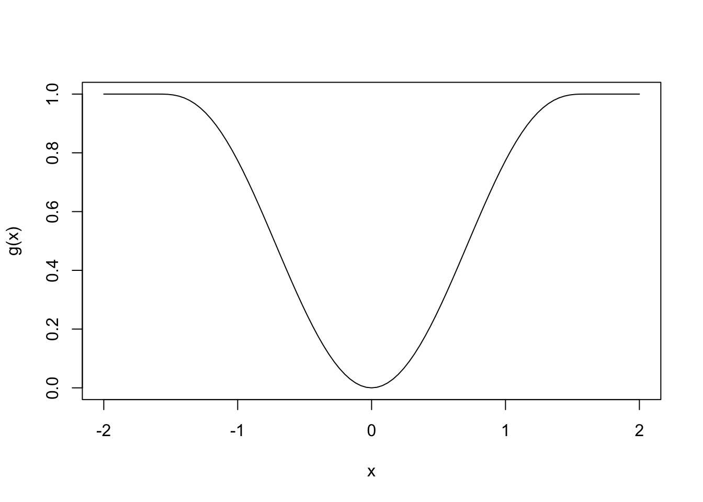
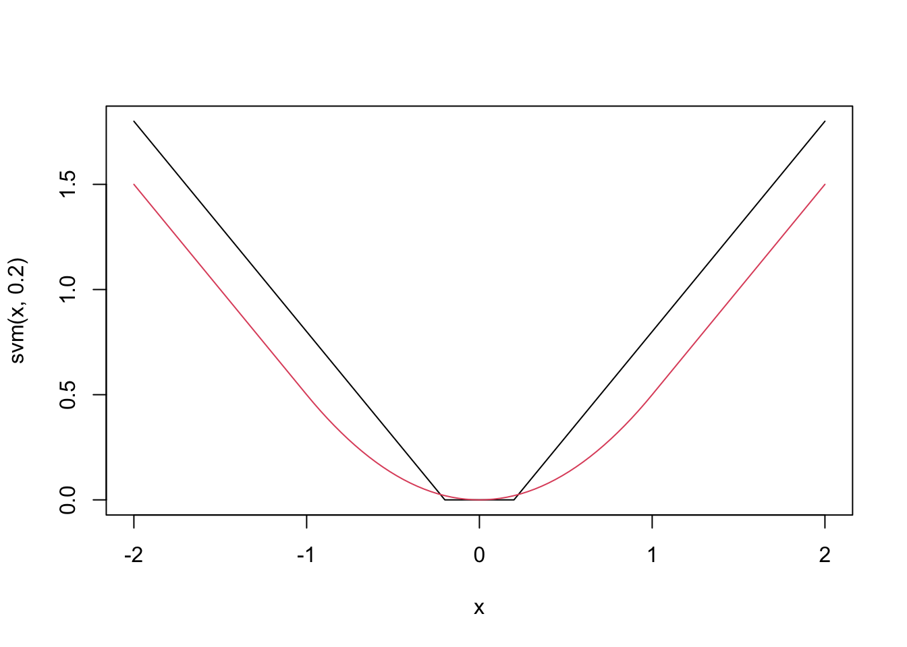
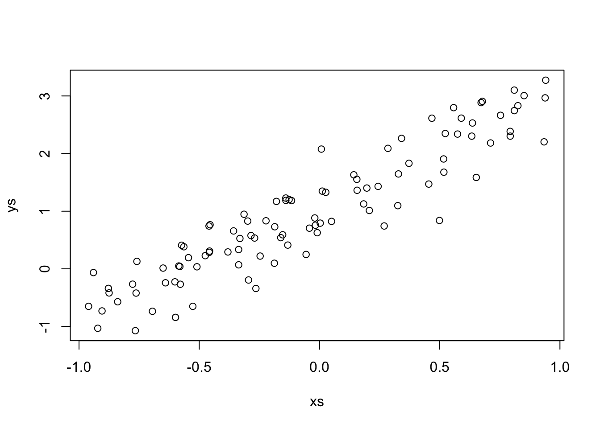
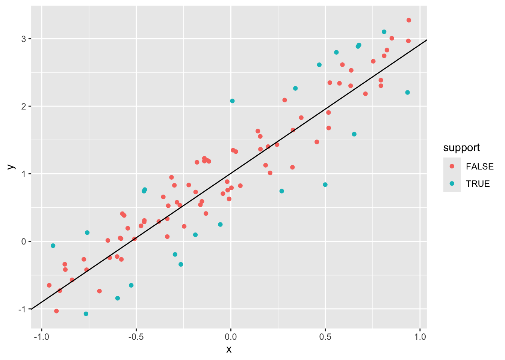
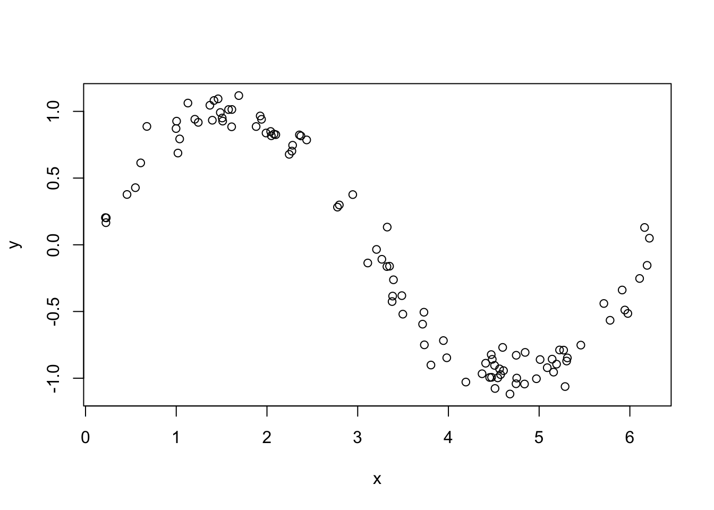
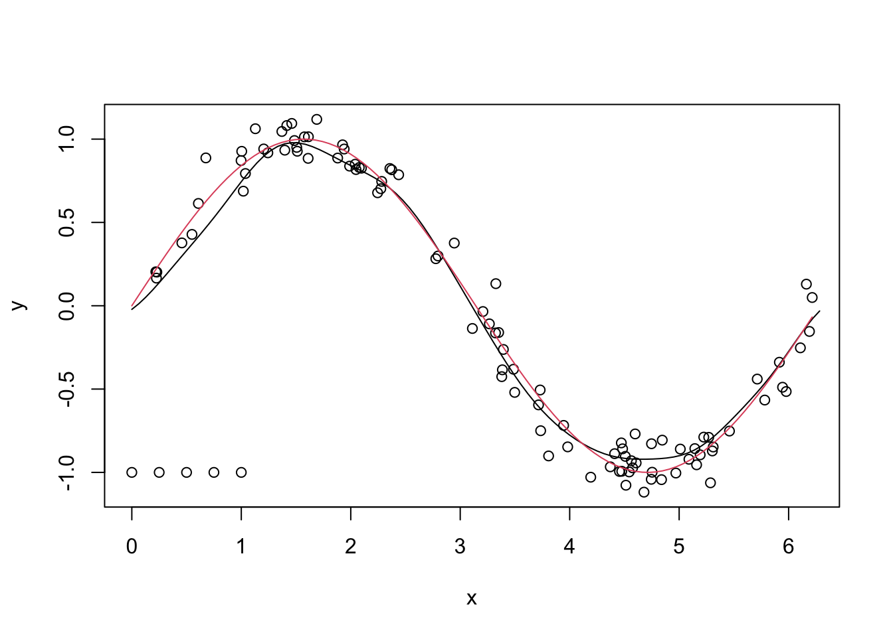
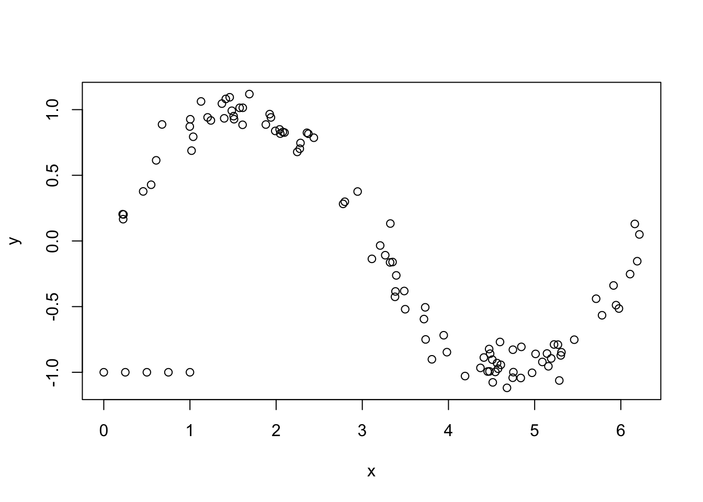
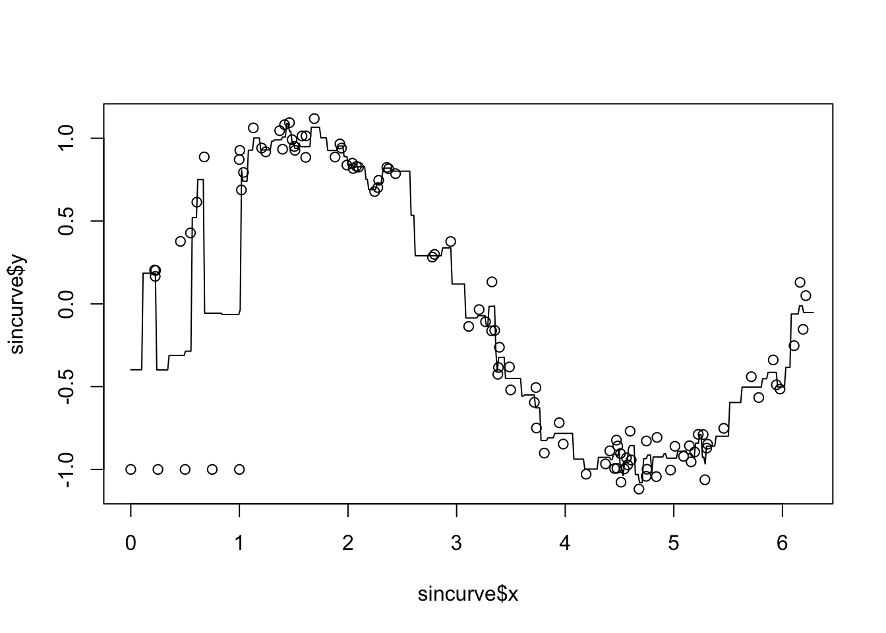

Chapter 7 Non-Linear Regression Models
This short chapter will cover two techniques: Support Vector Machines and \(k\) nearest neighbors.
Support vector machines are more commonly used in classification problems, but we are focusing on a numeric response for now. We will motivate SVM’s via an appeal to robust regression, much like using Huber or another error function.
\(k\) Nearest Neighbors is a useful technique in many contexts. We will only give a brief overview of this technique.
7.1 Support Vector Regression
Recall once again that OLS using lm minimizes the SSE given by
\[ SSE = \sum_{i = 1}^n\bigl(y_i - (\beta_0 + \beta_1 x_{1i} + \cdots \beta_{Pi})\bigr)^2 \]
In other words, if \(g(x) = x^2\), then the SSE is given by
\[ SSE = \sum_{i = 1}^n g(y_i - \hat y_i) \]
We have seen before that picking different functions \(g\) can lead to better results in some instances. For example, chosing \(g\) to be given in the following plot limits the influence of outliers.

Support vector machines give another choice of \(g\), which is shown below:
svm <- function(x, epsilon = 1) {
pmax(0, abs(x) - epsilon)
}
curve(svm(x, .2), from = -2, to = 2)
curve(robustbase::Mchi(x, psi = "huber", cc = 1), add = T, col = 2)
The loss function for SVM is similar to the Huber loss function and to \(g(x) = |x|\), because it behaves linearly outside of some interval around 0. However, a key difference is that small errors are set to exactly 0, rather than some small number. Another way to describe the loss function is that it is the absolute loss function \(g(x) = |x|\), which has been soft thresholded at some value of \(\epsilon\). Don’t worry if that doesn’t help you understand that last sentence; you can definitely understand the loss function straight from the graph.
Let’s call the SVM loss function \(g_S\) for this chapter, just to have notation. SVM regression minimizes
\[ \lambda \sum_{i = 1}^n g_S(y_i - \hat y_i) + \sum_{i = 1}^P \beta_i^2 \]
Note that there is a penalty attached to the coefficients. This will force the coefficients to be small within the range of errors for which \(g_S = 0\). You can think of it as; an error less than \(\epsilon\) isn’t really an error, it is essentially correct. So, there is no point in fitting the curve further once we are within \(\epsilon\), we should work on other priorities. The two priorities chosen are fitting points outside of the \(\epsilon\) error band, and making the coefficients small. We could have chosen other priorities and put those in the thing we are trying to minimize.
Note also that there is a parameter associated with the fit error. This parameter will determine how much weight is given to data points that fall outside of the \(\epsilon\) band relative to how much weight is given to the penalty term of the coefficients. The textbook recommends that you fix a value of \(\epsilon\) and tune the \(\lambda\) parameter via cross-validation.
Let’s look at an example, using simulated data.
sigma <- matrix(rnorm(9), ncol = 3)
sigma <- t(sigma) %*% sigma
dd <- matrix(MASS::mvrnorm(100 * 3, mu = c(0,0,0), Sigma = sigma), ncol = 3)
cor(dd)## [,1] [,2] [,3]
## [1,] 1.0000000 -0.3245328 0.1180751
## [2,] -0.3245328 1.0000000 0.1019505
## [3,] 0.1180751 0.1019505 1.0000000df <- data.frame(dd)
library(tidyverse)
df <- mutate(df, response = 1 + 2 * X1 + 3 * X2 + 4 * X3 + 8 * rt(100, 4))
summary(lm(response ~ ., data =df))##
## Call:
## lm(formula = response ~ ., data = df)
##
## Residuals:
## Min 1Q Median 3Q Max
## -24.018 -6.817 -0.835 4.677 62.534
##
## Coefficients:
## Estimate Std. Error t value Pr(>|t|)
## (Intercept) 2.3024 0.6707 3.433 0.000682 ***
## X1 2.3362 0.5994 3.897 0.000120 ***
## X2 2.4941 0.7237 3.446 0.000651 ***
## X3 4.4056 0.4927 8.942 < 2e-16 ***
## ---
## Signif. codes: 0 '***' 0.001 '**' 0.01 '*' 0.05 '.' 0.1 ' ' 1
##
## Residual standard error: 11.47 on 296 degrees of freedom
## Multiple R-squared: 0.2881, Adjusted R-squared: 0.2809
## F-statistic: 39.93 on 3 and 296 DF, p-value: < 2.2e-16svm_error <- function(beta) {
yhat <- beta[1] + dd %*% beta[2:4]
lambda * sum(svm(df$response - yhat, epsilon = 1)) + sum(beta[2:4]^2)
}
lambda <- 1
optim(par = c(1,2,3,4), fn = svm_error)## $par
## [1] 1.455720 1.367466 2.871621 3.904552
##
## $value
## [1] 2093.236
##
## $counts
## function gradient
## 321 NA
##
## $convergence
## [1] 0
##
## $message
## NULLWe definitely get quite different values for the parameters than we got when we used lm. Let’s do CV to see what the estimate RMSE is. In the past, we have been forcing our functions passed to optim to only have one parameter; namely, the one of interest. Here we see that we can have more arguments, and we just can add them to the end of optim and they get passed right along to the function we are optimizing.
svm_error <- function(beta, lambda, dd_train, df_train) {
yhat <- beta[1] + dd_train %*% beta[2:4]
lambda * sum(svm(df_train$response - yhat, epsilon = .5)) + sum(beta[2:4]^2)
}
svm_rmse <- replicate(100, {
train_indices <- sample(100, 75)
test_indices <- (1:100)[-train_indices]
dd_train <- dd[train_indices,]
df_train <- df[train_indices,]
dd_test <- dd[test_indices,]
beta <- optim(par = c(1,2,3,4), fn = svm_error,
lambda = lambda,
dd_train = dd_train,
df_train = df_train)$par
yhats <- beta[1] + dd_test %*% beta[2:4]
errors <- df$response[test_indices] - yhats
sqrt(mean(errors^2))
})
mean(svm_rmse)## [1] 11.18908Now, let’s tune over several different values of \(\lambda\).
svm_error <- function(beta, lambda, dd_train, df_train) {
yhat <- beta[1] + dd_train %*% beta[2:4]
lambda * sum(svm(df_train$response - yhat, epsilon = .5)) + sum(beta[2:4]^2)
}
sapply((2)^((-6):14), function(lambda) {
svm_rmse <- replicate(100, {
train_indices <- sample(100, 75)
test_indices <- (1:100)[-train_indices]
dd_train <- dd[train_indices,]
df_train <- df[train_indices,]
dd_test <- dd[test_indices,]
beta <- optim(par = c(1,2,3,4), fn = svm_error,
lambda = lambda,
dd_train = dd_train,
df_train = df_train)$par
yhats <- beta[1] + dd_test %*% beta[2:4]
errors <- df$response[test_indices] - yhats
sqrt(mean(errors^2))
})
c(lambda = lambda, mu = mean(svm_rmse), sdev = sd(svm_rmse))
})## [,1] [,2] [,3] [,4] [,5] [,6] [,7]
## lambda 0.015625 0.031250 0.062500 0.125000 0.250000 0.500000 1.000000
## mu 12.770140 12.851859 12.304318 11.766305 11.262668 11.367910 11.109200
## sdev 3.165466 2.981116 3.068947 3.236702 2.941832 3.123076 3.103451
## [,8] [,9] [,10] [,11] [,12] [,13] [,14]
## lambda 2.000000 4.000000 8.000000 16.000000 32.000000 64.000000 128.000000
## mu 11.318648 11.261377 11.401634 11.235324 11.361837 11.559575 10.976781
## sdev 3.044137 2.882519 3.065034 2.874574 3.186897 3.233528 2.912531
## [,15] [,16] [,17] [,18] [,19] [,20]
## lambda 256.000000 512.000000 1024.000000 2048.000000 4096.00000 8192.000000
## mu 11.054994 10.791886 11.480855 10.908943 11.45509 11.784265
## sdev 2.885535 2.970352 2.712785 2.675327 3.12303 3.305523
## [,21]
## lambda 16384.000000
## mu 11.033548
## sdev 3.046968We see that once we get to a \(\lambda\) of about 1/8, the RMSE is about as small as it is going to get.
And now we compare that to lm.
lm_rmse <- replicate(100, {
train_indices <- sample(100, 75)
test_indices <- (1:100)[-train_indices]
dd_train <- dd[train_indices,]
df_train <- df[train_indices,]
dd_test <- dd[test_indices,]
mod <- lm(response ~ ., data = df_train)
yhats <- predict(mod, newdata = df[test_indices,])
errors <- df$response[test_indices] - yhats
sqrt(mean(errors^2))
})
mean(lm_rmse)## [1] 11.24577Seems to be working about the same as lm on this data set. Up to this point, you could fairly ask why this section is in the non-linear regression chapter of the book. It seems completely in line with the things we were doing earlier. However, we can do a switcheroo called the “kernel trick.” Let’s do this.
Let’s suppose that we have new data \((u_1, \ldots, u_P)\) that we want to predict the response for. We find values \((\alpha_i)\) such that
\[ \beta_j = \sum_{i = 1}^n \alpha_i x_{ij} \]
Then, plugging into the regression equation, we have
\[ \begin{aligned*} \hat y &= \beta_0 + \sum_{j = 1}^P \beta_j u_j \\ &= \beta_0 + \sum_{j = 1}^P \sum_{i = 1}^n \alpha_i x_{ij} u_j\\ &= \beta_0 + \sum_{i = 1}^n \alpha_i \bigl(\sum_{j = 1}^P x_{ij} u_j\bigr) \end{aligned*} \]
Now we have more parameters in our model than we have observations! That is normally not a good idea, but we can add penalties to having \(|\alpha_i| > 0\) which make many of them zero. We want to minimize the following function:
\[ \sum_{i = 1}^n\sum_{j = 1}^n \alpha_i \alpha_j \langle x[i,], x[j,]\rangle + \epsilon \sum_{i = 1}^n |\alpha_i| - \sum_{i = 1}^n \alpha_i y_i \] subject to the constraints \(\sum_{i = 1}^n \alpha_i = 0\) and \(|\alpha_i| \le C\). I will be the first to admit that it is not obvious how to get to these conditions from where we started, but it follows from considering the Karush-Kuhn-Tucker Conditions for transforming one optimization problem into its dual formulation. See this paper for details. But, notice that there is an \(\ell_1\) penalty on the \(\alpha_i\) coefficients, which we have seen in the LASSO tends to force some/many of them to be zero. I am not going to try to solve that minimization problem directly, let’s use packages that do SVR and see what we get.

##
## Attaching package: 'kernlab'## The following object is masked from 'package:purrr':
##
## cross## The following object is masked from 'package:ggplot2':
##
## alphatuneGrid <- data.frame(C = 2^((-4):4))
df <- data.frame(x = xs, y = ys)
tuneGrid <- data.frame(C = 2^((-4):4))
caret::train(y ~ x,
data = df,
method = "svmLinear",
tuneGrid = tuneGrid,
preProcess = c("center", "scale")
)## Loading required package: lattice##
## Attaching package: 'caret'## The following object is masked from 'package:purrr':
##
## lift## Support Vector Machines with Linear Kernel
##
## 100 samples
## 1 predictor
##
## Pre-processing: centered (1), scaled (1)
## Resampling: Bootstrapped (25 reps)
## Summary of sample sizes: 100, 100, 100, 100, 100, 100, ...
## Resampling results across tuning parameters:
##
## C RMSE Rsquared MAE
## 0.0625 0.4244596 0.8617257 0.3452688
## 0.1250 0.4177273 0.8617257 0.3395679
## 0.2500 0.4160328 0.8617257 0.3383377
## 0.5000 0.4172620 0.8617257 0.3389625
## 1.0000 0.4174206 0.8617257 0.3388128
## 2.0000 0.4175769 0.8617257 0.3389441
## 4.0000 0.4175593 0.8617257 0.3389334
## 8.0000 0.4176696 0.8617257 0.3389961
## 16.0000 0.4176812 0.8617257 0.3390239
##
## RMSE was used to select the optimal model using the smallest value.
## The final value used for the model was C = 0.25.There doesn’t seem to be much difference between the tuning parameters, so let’s just do the default \(C = 1\).
mod <- kernlab::ksvm(x = xs,
y = ys,
kernel = "vanilladot", #linear regression
scaled = FALSE, #for illustration purposes
C = 1,
epsilon = .1)## Setting default kernel parameters## [1] -1.0000000 -1.0000000 1.0000000 1.0000000 1.0000000 1.0000000
## [7] -1.0000000 1.0000000 1.0000000 1.0000000 -1.0000000 -1.0000000
## [13] 1.0000000 -1.0000000 1.0000000 -1.0000000 1.0000000 -1.0000000
## [19] 1.0000000 -1.0000000 -1.0000000 -1.0000000 1.0000000 -1.0000000
## [25] 1.0000000 -1.0000000 1.0000000 1.0000000 -1.0000000 -1.0000000
## [31] 1.0000000 -1.0000000 -1.0000000 1.0000000 -1.0000000 1.0000000
## [37] 1.0000000 -1.0000000 1.0000000 -1.0000000 -1.0000000 -1.0000000
## [43] 1.0000000 1.0000000 1.0000000 -1.0000000 1.0000000 1.0000000
## [49] -1.0000000 -0.4760304 1.0000000 -1.0000000 1.0000000 -1.0000000
## [55] 1.0000000 1.0000000 1.0000000 -1.0000000 1.0000000 -1.0000000
## [61] -1.0000000 1.0000000 -0.5239696 -1.0000000 -1.0000000 1.0000000
## [67] -1.0000000 1.0000000 1.0000000 -1.0000000 -1.0000000 1.0000000
## [73] 1.0000000 1.0000000 -1.0000000 -1.0000000 -1.0000000 -1.0000000
## [79] -1.0000000 1.0000000 1.0000000## [1] 1 3 4 5 6 7 8 9 10 11 12 13 14 15 16 17 18 19 20 21 22 23 24 25 26
## [26] 27 29 30 31 32 33 34 35 36 37 38 40 42 43 44 45 46 48 49 51 54 55 56 58 60
## [51] 62 64 65 67 68 69 71 72 73 75 76 77 78 79 81 82 84 85 87 88 89 90 91 92 93
## [76] 94 95 96 97 98 99The observations for which the corresponding \(\alpha_i\) are not zero are called support vectors. In this case, we see that we have a surprisingly (perhaps) large number of support vectors for the model, considering the model can be described by two numbers; a slope and an intercept. We had the math up above, but I don’t know whether I emphasized it enough. Let’s see how we could predict a new value of the response given \(x = 1.5\). What we would do is compute
\[
\beta_0 + \sum_{i = 1}^n \alpha_i \langle x_[i,], x\rangle
\]
where here the inner product is just the multiplication of the two numbers. In order to do this with the results from ksvm, we would need to extract the \(\alpha\) values and the corresponding \(x\) values, multiply them together with the new x value, which in this case is \(x = 1.5\).
## [1] 3.999581## [,1]
## [1,] 3.999581In the above, I set scaled = FALSE to simplify this process, but in general we will not make that change. Let’s see what happens if we change \(\epsilon\).
## Setting default kernel parameters## [1] 3 4 17 21 24 27 32 36 42 43 48 51 55 56 58 76 77 79 90 95 96 98We see that we get quite a bit fewer support vectors. Let’s see which observations are showing up as support vectors in this model.
df$support <- FALSE
df$support[kernlab::alphaindex(mod)] <- TRUE
which(abs(predict(mod, newdata = xs) - ys) > .5)## [1] 3 4 17 21 24 27 32 33 34 36 42 43 48 51 55 56 58 76 77 79 82 87 90 95 96
## [26] 98m <- (diff(predict(mod, newdata = c(1,2))))[1,1]
b <- predict(mod, newdata = 0)[1,1]
ggplot(df, aes(x = x, y = y, color = support)) +
geom_point() +
geom_abline(slope = m, intercept = b)
Note that the support vectors for the model correspond to the observations which are further away than \(\epsilon = 0.5\) from the line of best fit (as determined by SVR). Suggestion: repeat the above plot, adding in lines that are \(\pm \epsilon\) of the line of best fit, and coloring the points that are associated with \(\alpha = C\) (=1, in this case).Now let’s look at another simulated example, but with multiple predictors.
set.seed(342020)
sigma <- matrix(rnorm(9), ncol = 3)
sigma <- t(sigma) %*% sigma
dd <- matrix(MASS::mvrnorm(50, mu = c(0,0,0), Sigma = sigma), ncol = 3)
df <- data.frame(dd)
df <- mutate(df, response = 1 + 2 * X1 + 3 * X2 + 4 * X3 + 8 * rt(10, 4))
library(kernlab)
tuneGrid <- data.frame(C = 2^((-4):4))
caret::train(response ~ .,
data = df,
method = "svmLinear",
tuneGrid = tuneGrid,
preProcess = c("center", "scale")
)## Support Vector Machines with Linear Kernel
##
## 50 samples
## 3 predictor
##
## Pre-processing: centered (3), scaled (3)
## Resampling: Bootstrapped (25 reps)
## Summary of sample sizes: 50, 50, 50, 50, 50, 50, ...
## Resampling results across tuning parameters:
##
## C RMSE Rsquared MAE
## 0.0625 10.040449 0.6590511 7.161621
## 0.1250 9.984610 0.6601772 7.154352
## 0.2500 9.919240 0.6622761 7.204765
## 0.5000 9.927216 0.6610119 7.222924
## 1.0000 9.942027 0.6588586 7.265434
## 2.0000 9.959372 0.6563532 7.309928
## 4.0000 9.995107 0.6528606 7.358029
## 8.0000 10.032467 0.6486597 7.407044
## 16.0000 10.092680 0.6423048 7.471047
##
## RMSE was used to select the optimal model using the smallest value.
## The final value used for the model was C = 0.25.Not much to choose from here; looks like the tuning parameter doesn’t matter much, but we’ll take it to be \(C = 0.25\), which is the smallest RMSE.
mod <- kernlab::ksvm(x = dd,
y = df$response,
kernel = "vanilladot",
C = 0.25,
scaled = FALSE) #for illustrative purposes## Setting default kernel parameters## [1] 0.0190795 -0.2500000 -0.2500000 0.2500000 0.2500000 -0.2500000
## [7] 0.2500000 -0.2500000 0.2500000 -0.2500000 0.2500000 -0.2500000
## [13] -0.2500000 0.2500000 0.2500000 -0.2500000 0.2500000 -0.2500000
## [19] 0.2500000 -0.2500000 0.2500000 -0.2500000 -0.2500000 0.2500000
## [25] 0.2500000 -0.2500000 0.2500000 -0.2500000 0.2500000 -0.2500000
## [31] 0.2500000 -0.2500000 -0.0190795 0.2500000 0.2500000 -0.2500000
## [37] 0.2500000 -0.2500000 0.2500000 -0.2500000 0.2500000 -0.2500000
## [43] -0.2500000 0.2500000 0.2500000 -0.2500000 0.2500000 -0.2500000
## [49] 0.2500000 -0.2500000## [1] 1 2 3 4 5 6 7 8 9 10 11 12 13 14 15 16 17 18 19 20 21 22 23 24 25
## [26] 26 27 28 29 30 31 32 33 34 35 36 37 38 39 40 41 42 43 44 45 46 47 48 49 50Let’s again see how to predict a new value. Recall that if the new predictors are \(x = (V1, V2, V3)\), then we compute the estimate of \(\hat y\) via:
\[ \beta_0 + \sum_{i = 1}^n \alpha_i \langle x[i,], x\rangle \]
x <- c(1,2,3)
ip <- function(x, y) {
sum(x * y)
}
ips <- apply(dd[alphaindex(mod),], 1, function(y) ip(y,x))
-b(mod) + sum(alpha(mod) * ips)## [1] 3.962655## [,1]
## [1,] 3.962655Again, when doing problems that are not for illustrative purposes, we will typically use scaled = TRUE, which is the default.
7.1.1 PLOT TWIST
Let’s recast what we have done. We have data that is stored in a tall, skinny matrix \(X\), which has \(n\) row and \(p\) columns. We get predictions of responses given new predictors \(u = (u_1, \ldots, u_p)\) by finding \(\{\alpha\}_{i = 1}^n\) and \(\beta_0\) and computing \[ \hat y = \beta_0 + \sum_{i = 1}^n \alpha_i \langle X[i,], u\rangle \] So, the predictions depend only on the data through their inner products with the new predictors. Of course, the \(\alpha_i\) and \(\beta_0\) will depend on the training responses. So, we take the inner product of each row with the new vector \(u\), and use that as weights in our weighted sum prediction of \(\hat y\).
What if, instead, we used a different function of each row and the new vector \(u\)? Formally, if we write \(K(x, y) = \langle x, y \rangle\), then \[ \hat y = \beta_0 + \sum_{i = 1}^n \alpha_i K(X[i,], u) \] This is called a kernel method and the function \(K\) is a kernel. We can define other functions \(K\) that we can use as kernels in the above equation. A commonly used one is the radial basis function \(K(x, y) = e^{-\sigma\|x - y\|^2}\), which leads to predictions of the form \[ \hat y = \beta_0 + \sum_{i = 1}^n \alpha_i e^{-\sigma\|X[i,] - u\|^2} \] Of course, we would have to re-evaluate the best way of choosing the \(\alpha_i\) and \(\beta_0\) in this context. The paramter \(\sigma\) is a tuning parameter that can be chosen by cross-validation. Let’s think about what this would do. The data in the training set \(X\) that is closest to the new data is given the most weight, with the weight accorded to data that is further away from \(u\) decreasing exponentially with the distance from \(u\). So, predictions will be a weighted average of the distances to the new data, where the weights are determined in such a way as to make the predictions close to the training data responses. Now, let’s spice things up. Here is a new data set that is a \(\sin\) curve.
sincurve <- data.frame(x = runif(100, 0, 2 * pi))
sincurve$y <- sin(sincurve$x) + rnorm(100, 0, .1)
plot(sincurve) 
Now, let’s throw in some outliers.

## sigma C
## 1 13.25457 0.25svm_mod <- ksvm(x = sincurve$x, y = sincurve$y,
C = c_mod$bestTune$C,
epsilon = .1,
sigma = c_mod$bestTune$sigma
)
new_x <- seq(0, 2*pi, length.out = 100)
new_y <- predict(svm_mod, newdata = seq(0, 2 * pi, length.out = 100))
plot(sincurve)
points(new_x, new_y, type = "l")
curve(sin(x), add = T, col = 2)
This technique isn’t perfect, but that it looks like a pretty good match for this particular example, doesn’t it!
7.2 K Nearest Neighbors
In the version of support vector regression with the radial basis function presented above, we estimated the response by taking a weighted sum of the responses in the training data. The weight was chosen so that observations which are close to the new data are weighted much more heavily than observations that are far away from the new data. \(K\)-Nearest Neighbors (KNN) is another method of doing a similar thing.
The basic version is that, when we are given new data that we want to predict on, we choose the \(K\) observations that are closest to the new data, and compute the mean of the corresponding responses. Let’s look at the sine curve example from the previous section.

Suppose that we want to predict the value of the response when \(x = 3\) using KNN with \(K = 2\). The first thing that we need to do is find the two observations that are closest to \(x = 3\). To do that, we will compute the distance between \(x = 3\) and each observation.
Now, we need to find the two that have the smallest distances to \(x = 3\). There are lots of ways to do this. Let’s append the distances to the sincurve data frame, and use arrange.
## x y d3
## 1 2.945620 0.3762654 0.0543801
## 2 3.111168 -0.1364121 0.1111682We see that the two observations that are closest to \(x = 3\) are when \(x = 2.95\) and when \(x = 3.11\). Our prediction for \(y\) would then just be the average of the two \(y\) values, 0.12.
Let’s see what the predictions would look like for a variety of \(x\) values.
new_xs <- seq(0, 2 * pi, length.out = 500)
new_ys <- sapply(new_xs, function(z) {
sincurve <- mutate(sincurve, d3 = abs(z - x))
arrange(sincurve, d3) %>%
top_n(n = 2, wt = -d3) %>%
pull(y) %>%
mean()
})
plot(sincurve$x, sincurve$y)
lines(new_xs, new_ys, type = "l")
We see that the base KNN method does not work well with outliers. We also see that the predictions are piecewise constant, and it also seems to be overfitting. We can use the median of the responses rather than the mean in order to help the outliers somewhat. We can also do cross-validation on \(K\), the number of nearest neighbors that we are choosing.
Exercise 7.1 Consider the sine curve data created above. Do KNN estimation of the response using the median of the 5 nearest neighbors, and provide a plot of the predictions.
When we have more than one predictor, it becomes necessary to make a choice for what distance function we are going to use. A couple of common ones are the \(\ell_2\) distance and the \(\ell_1\) distance, given by
\[ \sqrt{\sum_{i = 1}^P (x_i - y_i)^2} \]
and
\[ \sum_{i = 1}^P |x_i - y_i| \] respectively. We will stick with the \(\ell_2\) distance in this section.
Let’s see how to do KNN prediction and cross validation using packages. The caret package has a function knnreg that does KNN regression. Note that we get the same answer below as we got when doing it above by hand.
## [1] 0.1199267In order to do cross validation, we can use the train function in caret as below. Note: since the predictions we make are means of the actual responses, we probably want to use folded cross validation, rather than the default which is bootstrapping.
tune_k <- data.frame(k = 1:20)
knn_train <- train(y ~ x,
trControl = trainControl(method = "repeatedcv", repeats = 5),
data = sincurve,
method = "knn",
tuneGrid = tune_k)
knn_train$results## k RMSE Rsquared MAE RMSESD RsquaredSD MAESD
## 1 1 0.3838788 0.7170167 0.2276043 0.2586968 0.2886250 0.12792148
## 2 2 0.3362237 0.7800469 0.1970388 0.2058597 0.2117669 0.10299997
## 3 3 0.3399026 0.7868182 0.2072089 0.1886640 0.2009687 0.09307557
## 4 4 0.3290409 0.8042437 0.1979214 0.1770419 0.1861005 0.08898719
## 5 5 0.2979963 0.8408409 0.1869965 0.1546552 0.1519875 0.07981688
## 6 6 0.3047243 0.8363890 0.1903598 0.1464807 0.1466539 0.07870518
## 7 7 0.3035879 0.8357667 0.1895394 0.1475990 0.1464507 0.08000583
## 8 8 0.3026958 0.8352688 0.1899724 0.1504518 0.1518960 0.08243188
## 9 9 0.2987045 0.8387690 0.1889080 0.1514698 0.1510139 0.08272786
## 10 10 0.2992286 0.8369184 0.1877063 0.1562651 0.1569141 0.08484843
## 11 11 0.3001848 0.8354555 0.1863867 0.1600516 0.1582971 0.08715876
## 12 12 0.3009612 0.8336326 0.1857216 0.1634831 0.1640991 0.08890183
## 13 13 0.2993238 0.8316823 0.1842788 0.1710689 0.1727768 0.09450845
## 14 14 0.2994149 0.8297009 0.1841082 0.1763259 0.1759472 0.09761913
## 15 15 0.3013161 0.8264298 0.1867235 0.1799269 0.1806064 0.10120519
## 16 16 0.3051031 0.8215116 0.1897412 0.1833183 0.1847234 0.10415262
## 17 17 0.3122916 0.8155246 0.1930653 0.1837068 0.1887951 0.10416938
## 18 18 0.3160359 0.8114759 0.1965241 0.1868663 0.1934326 0.10518028
## 19 19 0.3191308 0.8078853 0.1985402 0.1896941 0.1964903 0.10439126
## 20 20 0.3226328 0.8044391 0.1996434 0.1928524 0.1999880 0.10488994Next, we find the smallest RMSE and choose the simplest model that is within one sd of the smallest RMSE.
best_k <- which.min(knn_train$results$RMSE)
one_sd <- knn_train$results$RMSE[best_k] + knn_train$results$RMSESD[best_k]
filter(knn_train$results, RMSE < one_sd) %>%
pull(k)## [1] 1 2 3 4 5 6 7 8 9 10 11 12 13 14 15 16 17 18 19 20We would choose k = 1 based on the one sd rule, or we could also choose the minimum RMSE, which was 5.
Finally, we offer some practical advice. We recommend centering and scaling your predictors before using KNN. Including predictors that have little predictive value for the response can cause KNN to have poor results, as just by chance the “wrong” observations are going to be close to the new data.
Exercise 7.2 Consider the tecator data set that is contained in the caret library. Recall that you can access this data via data(tecator). Model the first response variable in endpoints on the absorp data using knn3
- How many neighbors give the lowest RMSE?
- How many neighbors is the simplest model that is within one sd of the lowest RMSE?
- Use your model to predict the response for the first observation in the data frame
- What is the error when you predict the response for the first observation in the data set?